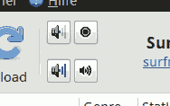

Special extra/mini buttons
Using the specbuttons plugin, you can define additional shortcuts. This is meant as convenience - allows to start other audio apps or system controls from within streamtuner2.

The settings list can be found with the plugin options in the 🔌 Features tab. It follows the layout of the player/recording configuration. Except that it lists icons and their according action commands:
Icon |
Cmd |
volume-up |
amixer sset Master 2%+ |
gtk-media-forward |
vlc next |
mixer |
pavucontrol |
database |
./myscript "%url" "%title" |
./import.png |
audacity %pls |
gtk-icons
Note that the icon name can also be that of a Gtk-builtin icon. Their names always start with "gtk-" - for example "gtk-cancel". You can find a list of all available builtins under http://www.pygtk.org/pygtk2reference/gtk-stock-items.html. They usually match your Gtk theme though.
PNG icons
In case you enter something like "player", the icon name will be searched for and expanded to an absolute PNG filename. For example "totem" might become /usr/share/icons/HighContrast/16x16/apps/totem.png.
This won't always yield the exact icon / theme / or size you wanted. So it's sometimes necessary to look up the complete path yourself. So you might want search them manually locate /usr/shar/icons | grep "volume" to pick out a more fitting icon.
You can also use png files located in your homedir or else.
Commands
You can define any graphical or commandline application to be invoked by your custom toolbar button. Foremost you want to invoke audio controls of course, or start/stop players.
For example amixer sset Master 1dB+ is likely to work for all current distributions.
Placeholders like %title and %url or %pls and %m3u are supported for all commands as well. So you can have additional play/record shortcuts.
icon rows
With the "number of rows" setting, more buttons can be packed together. It looks okay with up to 3 rows - when using the large sized main toolbar. The defined icon shortcuts will always be packed column-wise.
The icon list isn't ordered. So you cannot define which button appears first. (Albeit the plugin config definition can be changed from 'dict' to 'table' now, and the plugin required just a little editing then.)